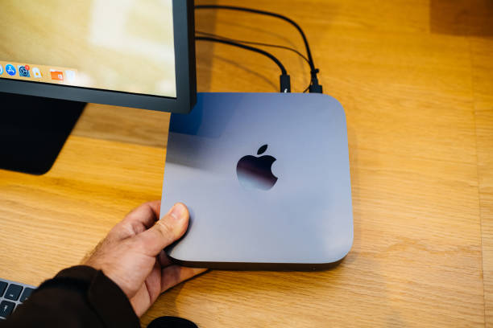

Future trends in mini PC technology, including advancements in processing power and connectivity options
Posted by on 2024-06-13
The future of mini PC technology is bright, with advancements in processing power and connectivity options paving the way for even more compact and efficient devices. As we continue to push the boundaries of what is possible in computing, mini PCs are becoming more powerful and versatile than ever before.
One of the most exciting trends in mini PC technology is the increasing processing power that these tiny devices are capable of. Thanks to advancements in microprocessor design and manufacturing techniques, mini PCs can now rival their larger counterparts in terms of performance. This means that users can enjoy a seamless computing experience on a device that fits easily in the palm of their hand.
Connectivity options are also evolving rapidly in the world of mini PCs. With the rise of wireless technologies such as Bluetooth and Wi-Fi, users can now connect their mini PC to a wide range of peripherals without needing to plug in any cables. This opens up a whole new world of possibilities for how we interact with our devices, allowing us to create truly wireless setups that are both convenient and clutter-free.
In addition to these hardware advancements, software developments are also playing a key role in shaping the future of mini PC technology. Operating systems such as Windows 10 IoT Core and Ubuntu Core have been optimized for use on small form factor devices, offering a streamlined user experience that takes full advantage of the capabilities of modern mini PCs.
Overall, it is clear that the future of mini PC technology is incredibly promising. With improvements in processing power, connectivity options, and software optimization, these pint-sized computers are set to become even more essential tools for work, play, and everything in between. Whether you're looking for a compact workstation or a portable entertainment hub, there has never been a better time to invest in a mini PC.